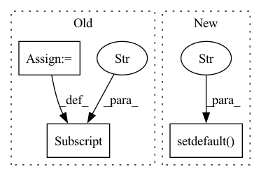

Pattern ID :23756
Before Change
def config():
os.environ["JINA_PARALLEL"] = os.environ.get("JINA_PARALLEL", "1")
os.environ["JINA_SHARDS"] = os.environ.get("JINA_SHARDS", "1")
os.environ["JINA_WORKSPACE"] = os.environ.get("JINA_WORKSPACE", "workspace")
os.environ["JINA_PORT"] = "45678"
After Change
"JINA_WORKSPACE_MOUNT",
f"{os.environ.get("JINA_WORKSPACE")}:/workspace/workspace")
os.environ.setdefault("JINA_LOG_LEVEL", "INFO")
os.environ.setdefault("JINA_PORT" , str(45678))
def index_restful():
flow = Flow().load_config("flows/flow-index.yml", override_with={"protocol": "http"})In pattern: SUPERPATTERN
Frequency: 4
Non-data size: 3
Instances Fragment ID: 74180771
Project Name: jina-ai/examples
Commit Name: 4de569187f138fc79cc6c08852f13315c1e545bc
Time: 2021-08-17
Author: jakob.kruse@jina.ai
File Name: cross-modal-search/app.py
M Class Name: AnonimousClass
N Class Name: AnonimousClass
M Method Name: config(0)
N Method Name: config(0)
M Parent Class:
N Parent Class:
M File Name: cross-modal-search/app.py
N File Name: cross-modal-search/app.py
M Start Line: 19
M End Line: 22
N Start Line: 18
N End Line: 23
Before Change
tags["zenml.step"] = self.step_name
// the datasetId tag is used as a unique identifier for datasets in
// whylabs
tags["datasetId"] = dataset_name
logger = session.logger(
dataset_name, dataset_timestamp=dataset_timestamp, tags=tags
)After Change
// the datasetId tag is used to identify dataset profiles in whylabs.
// dataset profiles with the same datasetID are considered to belong
// to the same dataset/model.
tags.setdefault("datasetId" , dataset_name)
logger = session.logger(
dataset_name, dataset_timestamp=dataset_timestamp, tags=tags
)
logger.log_dataframe(df) Fragment ID: 74180734
Project Name: maiot-io/zenml
Commit Name: c74d601547e39e25dc6058c43d8d3454b7abd003
Time: 2022-01-21
Author: stefan@zenml.io
File Name: src/zenml/integrations/whylogs/whylogs_utils.py
M Class Name: WhylogsContext
N Class Name: WhylogsContext
M Method Name: log_dataframe(5)
N Method Name: log_dataframe(4)
M Parent Class: StepContext
N Parent Class: StepContext
M File Name: src/zenml/integrations/whylogs/whylogs_utils.py
N File Name: src/zenml/integrations/whylogs/whylogs_utils.py
M Start Line: 104
M End Line: 112
N Start Line: 86
N End Line: 115
Before Change
depth = -1
alpha = 1.
blended = False
hparams["magnitude_std"] = float("inf")
config = config_str.split("-")
assert config[0] == "augmix"
config = config[1:]After Change
blended = bool(val)
else:
assert False, "Unknown AugMix config section"
hparams.setdefault("magnitude_std" , float("inf")) // default to uniform sampling (if not set via mstd arg)
ops = augmix_ops(magnitude=magnitude, hparams=hparams)
return AugMixAugment(ops, alpha=alpha, width=width, depth=depth, blended=blended)
Fragment ID: 74180765
Project Name: feng-lab/pytorch-image-models
Commit Name: 3cdaf5ed56b508ac11102af36820eea79a6795f0
Time: 2021-08-12
Author: rwightman@gmail.com
File Name: timm/data/auto_augment.py
M Class Name: AnonimousClass
N Class Name: AnonimousClass
M Method Name: augment_and_mix_transform(2)
N Method Name: augment_and_mix_transform(2)
M Parent Class:
N Parent Class:
M File Name: timm/data/auto_augment.py
N File Name: timm/data/auto_augment.py
M Start Line: 797
M End Line: 797
N Start Line: 831
N End Line: 831
Before Change
os.environ["PARALLEL"] = str(parallel)
os.environ["SHARDS"] = str(shards)
os.environ["WORKDIR"] = "./workspace"
os.makedirs(os.environ["WORKDIR"], exist_ok=True)
os.environ["JINA_PORT"] = os.environ.get("JINA_PORT", str(65481))
After Change
parallel = 2 if sys.argv[1] == "index" else 1
os.environ.setdefault("JINA_MAX_DOCS", "100")
os.environ.setdefault("JINA_PARALLEL" , str(parallel))
os.environ.setdefault("JINA_SHARDS", str(4))
os.environ.setdefault("JINA_WORKSPACE", "./workspace")
os.makedirs(os.environ["JINA_WORKSPACE"], exist_ok=True)
os.environ.setdefault("JINA_PORT", str(65481)) Fragment ID: 74180768
Project Name: jina-ai/examples
Commit Name: 5394942575500741131a6292e44d9764a2376486
Time: 2020-09-17
Author: maximilian.werk@gmx.de
File Name: multires-lyrics-search/app.py
M Class Name: AnonimousClass
N Class Name: AnonimousClass
M Method Name: config(0)
N Method Name: config(0)
M Parent Class:
N Parent Class:
M File Name: multires-lyrics-search/app.py
N File Name: multires-lyrics-search/app.py
M Start Line: 17
M End Line: 24
N Start Line: 16
N End Line: 23